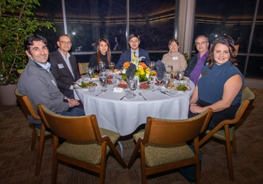

Sabre Kais Group
Quantum Information and Quantum Computation
News
Aug. 9, 2024:
Rishabh Gupta successfully defended his Ph.D. thesis, “Maximal entropy formalism for quantum state tomography and applications.” Congratulations, Dr. Gupta! Picture
{kind=link}
Feb. 22, 2024:
Fantastic Ph.D defense by Sumit Kale on " Coherent Quantum Control and Quantum Simulation in Chemical Reactions." He will join IBM -India; best of Luck! Picture Picture
{kind=link}
{kind=link}
Jan 26th, 2024
Visiting Miller Professorship Award:
Sabre Kais, a distinguished professor of chemistry and electrical and computer engineering, has been awarded a visiting Miller professorship at the Miller Institute, which is housed at UC Berkeley. The purpose of the Visiting Miller Professorship is to bring promising or eminent scientists to the Berkeley campus on a short-term basis for collaborative research interactions within the Institute’s interdisciplinary community. link
Jan 9th, 2024
Congratulations to Prof. Kais for earning SPARK incentive funding. link
Nov 15th, 2023
Excited again to see the Front Cover Art for our manuscript: “Physics-Inspired Quantum Simulation of Resonating Valence Bond States─A Prototypical Template for a Spin-Liquid Ground State” J. Phys. Chem. A 2023, 127, 41, 8751–8764. link
Nov 15th, 2023
Excited to see the Front Cover Art for our manuscript: "Quantum Machine Learning Predicting ADME-Tox Properties," which is now published in the Journal of Chemical Information and Modeling. link
Nov 3rd, 2023
2023 Seed for Success Acorn Awards to Sabre Kais and David John Stewart*, from National Science Foundation IUCRC Phase I, Purdue University: Center for Quantum Technologies (CQT), $1,125,000.00. link
Oct 11th, 2023
Collaboration of Kais group with IBM: Purdue researchers, IBM perform perturbation theory method on quantum computer - Purdue University News. link
Aug 18th, 2023
Prof. Kais has joined as a faculty at the Elmore Family School of Electrical and Computer Engineering. link
Aug 17th, 2023
Quantum Science Seed Grant Award for “Exploiting Topological Phases of Matter", from a group led by Ralph Kaufmann and including Birgit Kaufmann, Shawn Xingshaun Cui, and Sabre Kais, $50k is awarded under the grant for the year 2023-2024 by Purdue University. For more information: link.
Aug 16th, 2023
Prof. Kais visited UCLA for collaborations in the field of quantum science with Prof.Prineha Narang, Prof.Raphy Levine, and Colleagues at the UCLA Center for Quantum Science and Engineering (CQSE).
He gave 5 talks in the LA region, UC-Irvine (July 6), UCLA (July 12), UC-Santa Barbara (July 19) , Caltech (July 27), and UC -San Diego (July 28).
July 4th, 2023
Checkout Prof Kais's recent interview with EdTech on "How is Higher Education Preparing for Quantum Computing" (link)
June 16rd, 2023
Congratulations to Dr. Shreehari Sureshbabu for successfully defending his Ph.D. thesis on "Classical and Quantum Optimization for Scientific Computation". He has joined the FLARE Quantum team at JP Morgan and Chase. (link)
June 3rd, 2023
Prof Kais gave a keynote talk in the Graduate Student's seminar series at Virtual Learning University (link).
{kind=link}
June 1st, 2023
Congratulations to Vinit for receiving the 2023 Ross-Lynn Research Scholar Grant for his work on Maneuvering atomic legos on a potential energy surface using quantum-assisted neural network encoding: A foray into the learning mechanism”
Congratulations and best luck to Rishabh and Sumit for their summer internships at Fidelity Investments (link) and IBM Research (link).
April 21st, 2023
Rishabh gave a talk on "Quantum State Tomography and Hamiltonian Learning based on Maximal Entropy Formalism" in the Physical Chemistry Seminar at the Department of Chemistry, Purdue University: Flyer link
Congratulations to Sumit for getting the Bisland Dissertation Fellowship. The fellowship is supported by the Graduate School for Excellence in Research.
April 12th, 2023
Congratulations to Andrew and Prof Kais for their recent publication which develops a unitary dependence theory to characterize the behaviors of quantum circuits and states.". Featured on PQSEI twitter handle: link
Sumit gave a talk on "Interference in Chemical Reactions" in the Physical Seminar at Purdue University Department of Chemistry. Flyer link | Semiar_PDF
April 7nd, 2023
Congratulations to Yuchen Wang for successfully defending his Ph.D. thesis on "Quantum Computation in the qudit-space and its application in open quantum dynamics": Picture
{kind=link}
April 2nd, 2023
Center for Quantum Technologies has been featured in Dimensions of Discovery.
link to the article: Purdue launches most recent quantum leap, the Center for Quantum Technologies
March 22th, 2023
The Kais group will be conducting a workshop in the ACS Spring 2023 Conference on "Quantum Information and Quantum Computing for Chemistry". It is scheduled on March 25th in Indianapolis. For more details please checkout the flyer (link) and registration link.
March 21th, 2023
Congratulations to Rishabh and Sumit for getting an internship in Fidelity and IBM for this summer.
March 14th, 2023
CQT Partner Institution roundtable is featured in Campus Technology "A New NSF Industry/University Cooperative Research Center in Indiana: The Center for Quantum Technologies". link
Feb 6, 2023
Prof Kais attended an invited dinner with president Dr. Mung Chiang. The event was organized to celebrate Purdue's outstanding faculties who have successfully competed in large-scale national research proposals. Across a wide range of fields. link

Jan 27, 2023
Our new paper "Quantum Simulation of the Radical Pair Dynamics of the Avian Compass" made it to the cover of JPCL, we would like to thank Yanan Huai for designing the image and congratulate all the authors. link to the cover page.
{kind=link}
Nov 30, 2022
A big congratulations to Raja Selvarajan for marvelously passing his Ph.D. defense exam.
Nov 22, 2022
Congratulations to Junxu Li for passing his Ph.D. defense exam with flying colors. He will be joining Northeastern University, China as an assistant professor in Physics.
Nov 21, 2022
Congratulations to Shree Hari Sureshbabu for passing acing his prelims. Great job Shree!
Nov 12, 2022
Prof. Kais delivered an invited research talk on Information Scrambling for navigating the learning landscape of a quantum machine learning model (link) at the 6th Quantum Techniques in Machine Learning Conference (QTML 2022 link).
Aug 30, 2022
Prof Kais will be leading the NSF funded Center for Quantum Technologies which involves collaboration of three Indiana research universities with the industry and government. For more information click on the link.
July 29, 2022
Congratulations to Sumit. He has been recognized as a Qiskit Advocate by IBM Quantum. The Qiskit Advocate program recognizes an individual's contribution to the community and level of knowledge of Qiskit.
June 26, 2022
Prof. Sabre Kais has been awarded CMOA Senior Medal by the International Scientific and Honorary Committees of the Twenty-fifth International Workshop on Quantum Systems in Chemistry, Physics and Biology. link.
June 25, 2022
Congratulations to our group members for securing Summer internships in the industry and national labs
Rishabh Gupta: QML at Fedility (FCAT)
Shree Hari: QML at JP Morgan (FLARE)
Blake: QML at QuEra
Raja: ORNL
Chris: Boing
Sumit: IBM Quantum
April 10, 2022
Our paper on Quantum Condition Space made it to the cover picture of Advance Quantum Technology. Congratulations Andrew and Prof. Sabre Kais. PDF | link.
December 3, 2021
Congratulation to Prof. Sabre Kais. He has been appointed as the "Distinguished Professor of Chemistry" by the Purdue board of trustees for his important contributions in the field of Quantum Information and Computing. Follow the link for more information.
November 30, 2021
Congratulations to Yuchen for passing prelims.
November 28, 2021
We are editing a special issue on "Application Opportunities of Quantum Computing". For more information please follow the link.
November 15, 2021
Congratulations to Rishabh for passing prelims. Keep up the good work! link.
November 14, 2021
Our article “Convergence of a Reconstructed Density Matrix to a Pure State Using the Maximal Entropy Approach” has been included in a new Virtual Issue on “Recent Innovations in Solid-State and Molecular Qubits for Quantum Information Applications.” This issue features recent experimental and theory papers from several ACS journals that describe research on the discovery of new qubit candidates and devices, elucidation of decoherence mechanisms to increase qubit lifetime, and computational applications of qubit-based quantum computers.
The Virtual Issue has been published in The Journal of Physical Chemistry A/B/C/Letters and can be found at: link.
November 12, 2021
Congratulations to Sumit for passing prelims. Great job! link.
November 3, 2021
Congratulations to Junxu for passing prelims with flying colors.
November 2, 2021
Prof Sabre Kais gave an invited talk at MIT on "Quantum Information and Computing for Complex Chemical Systems". link.
October 27, 2021
Congratulations to Manas Sajjan, Shree Hari Sureshbabu, Sabre Kais for their publication in the Journal of American Chemical Society (JACS), " Quantum Machine-Learning for Eigenstate Filtration in Two-Dimensional Materials". Follow the link to view the full article.
October 20, 2021
Prof. Kais received a courtesy appointment as a Professor at the Elmore Family School of Electrical and Computer Engineering at Purdue University. Link to the faculty directory.
September 22, 2021
Professor Sabre Kais will serve on the International Advisory Board of Quantum Ecosystems Technology Council of India (QETCI).
September 21, 2021
Purdue is Joining Yale in the Quantum Computing Chemistry Center
Kais research group at Purdue University will join Yale University in the National Science Foundation's Centers for Chemical Innovation which has been awarded a $1.8 million grant. The center aims to bridge the gap between today’s quantum computing tech and the problems for which a quantum computer could be useful in chemistry research. Clique here to read the press release from Yale News.
September 2, 2021
U.S. Department of Energy funds center to build a foundation for quantum chemistry. Clique here to read the press release from UChicago News.
September 1, 2021
Prof. Kais has joined the Elmore Emerging Frontiers Center at Electrical and Computer Engineering-Purdue. Clique here to read the press release.
August 26, 2021
Entanglement extends reach towards National Science Foundation and Midwest Quantum Academia
Entanglement Inc. partners with Dr. Kais and the brilliant team of researchers at the Center for Quantum Technologies (CQT). This partnership will help to accelerate discoveries in critical areas of Quantum Information Science, develop the quantum workforce, and remain competitive while demonstrating U.S. leadership.
Clique here to read the press release.
August 23, 2021
Professor Sabre Kais will be giving an invited talk on "Quantum Machine Learning for Complex Chemical Systems" at the Qiskit seminar series organized by IBM Quantum. The talk is scheduled for 12 PM (EST) on Aug 27th 2021.
link: YouTube.
Presentation File: Quantum Machine Learning for Complex Chemical Systems
August 2, 2021
Our research on creation complexity has been featured on the U.S. Department of Energy webpage. Congratulations Professor Sabre Kais and Dr. Andrew Hu.
Clique here to see the article.
July 31, 2021
Department of Energy Funding for Kais QIS Team
Professor Sabre Kais is leading a team selected to receive U.S. Department of Energy (DOE) funding. The project's main focus is developing Quantum Computing Algorithms and it's applications for Coherent and Strongly Correlated Chemical Systems.
For more detailed information: link
July 1, 2021
Purdue to lead Indiana coalition to develop quantum technologies
Purdue University is leading efforts to establish a National Science Foundation-backed quantum research center that would bring dozens of scientists from four research partners and industries together to tackle applied research in the field. For more detailed information: link .
The Centre for Quantum Technologies: link.
June 17, 2021
Our recent paper "Hybrid quantum-classical Neural Network for Calculating Ground State Energies of Molecules" has been selected as being of special interest and will be featured in a special edition of Entropy entitled “Editor’s Choice Articles”. For more detailed information: link. Check it out on Twitter | Download PDF.May 20, 2021
Congratulations to Vivek Dixit and Raja Selvarajan for the new publication "Training a Quantum Annealing Based Restricted Boltzmann Machine on Cybersecurity". The paper appears in IEEE Transactions on Emerging Topics in Computational Intelligence.
April 2, 2021
Kais and Bermel research groups have demonstrated the first application of the dark state protection mechanism to a photovoltaic material with a photon current enhancement of up to 35% exceeding the Shockley–Queisser limit. Results published in the prestigious Journal Advanced Functional Materials, 2100387 (2021). Check it out on Twitter.
March 23, 2021
Kais group members gave 7 talks at the APS March Meeting 2021. See attached PDF.
February 8, 2021
Rishabh Gupta tests a new theory for quantum state tomography. See article in our Chemistry News.
December 3, 2020
Please join me in congratulating Raja Selvarajan for passing his Prelim and Teng Bian for passing his Ph.D. defense. Great news!
November 30, 2020
Congratulations to Sumit Suresh Kale, a graduate student in our group, for successfully completing the IBM Quantum Challenge 2020. His submission has been ranked 32nd worldwide (1200 people participated) based on the complexity of his quantum circuit design. Well done! View article.
November 19, 2020
Rongxin Xia successfully defended his Ph.D. thesis. Download PDF | View on figshare
November 15, 2020
In collaboration with Professor Barry Sanders (University of Calgary) our group has published a review article in Frontiers in Physics. The title is "Qudits and High-Dimensional Quantum Computing". Click here to see paper.
September 3, 2020
Purdue to participate in national quantum science research push. See link posted below
August 31, 2020
Read the latest article featured in Purdue Today on Quantum Algorithms. See link posted below
January 2, 2020
Special Issue: Call for Papers Frontiers in Physics Quantum Information and Quantum Computing for Chemical Systems Deadline: 30 Mar, 2020
Please visit the website for more details:
November 6, 2019
Professor Kais Traveled to Harvard University to give a talk at the Harvard Quantum Initiative. Click here for flyer.
October 28, 2019
Professor Kais receives the Herbert Newby McCoy Award for his creation of novel quantum computing algorithms for chemical calculations and the formulation of finite size scaling algorithms for assessing the stability of atomic and molecular systems. Click here for flyer. Click here for booklet pg.1 Click here for booklet pg.2. The new release in online here Click for News Release
{kind=link}
{kind=link}
{kind=link}
August 2, 2019
Our new paper in Science Advances in out "Entanglement Classifier in Chemical Reactions" Click here for PDF. The new release in online here Click for News Release
May 16, 2019
Congratulations to Sabre Kais on winning the 2019 Herbert Newby McCoy Award. This is the most prestigious award for research in science that is given at Purdue. Click here for article.
May 15, 2019
We are proud to share a new website for Quantum Machine Learning. Check it out. Click here for Website.
March 1, 2019
Our Frontier paper made it to: FRONTIERS IN PHYSICS - 2017 & 2018 EDITOR'S CHOICE 9. PHYSICAL CHEMISTRY AND CHEMICAL PHYSICS "Status of the Vitrational Theory of Olfaction" by Ross D. Heohn, David E. Nichols, Hartmut Neven and Sabre Kais, March 2018, Volume 6, Article 25 Click here for article.
October 15, 2018
Professor Sabre Kais is featured in a recent Purdue communication "Quantum Computers Tackle Big Data with Machine Learning". Click here for article.
October 10, 2018
Our paper "Quantum Machine Learning for Electronic Structure Calculations" has been published online in Nature Communication! Click here for PDF.
September 25, 2018
Professor Sabre Kais has been awarded U.S. Department of Energy (DOE) funding to advance quantum information and computing work. The PI Kais is part of a Purdue team including Yong Chen, Libai Huang, and Dimitry Zemlyanov in collaboration with the University of Chicago team David Mazziotti and John Anderson. The nearly $2.5 million award spans three years and is for “Quantum Computing Algorithms and Applications for Coherent and Strongly Correlated Chemical Systems.” DOE Grant: “Quantum Computing Algorithms and Applications for Coherent and Strongly Correlated Chemical Systems.” DOE News. Purdue News.
Professor Sabre Kais recieves NSF Grant. NSF announces new awards for quantum research, technologies. NSF Grant: “High Dimensional Frequency Bin Entanglement - Photonic Integration and Algorithms.” NSF News. Purdue News.
September 17, 2018
Professor Sabre Kais' use of Quantum Computing Tools are recognized in the 150 Years of Giant Leaps at Purdue University. See image.
September 12, 2018
Our new paper with Dudley Herschbach, Qi Wei and Tomokazu Yasuiked on "Pendular alignment and strong chemical binding are induced in helium dimer molecules by intense laser fields" has been published in the Proceeding of the National Academy of Sciences ( PNAS ). See publication.
August 14, 2018
Our PNAS article "Elucidation of Near-Resonance Vibronic Coherence Lifetimes by Nonadiabatic Electronic-Vibrational State Character Mixing"; has been published online! Click here for PDF.
June 27, 2018
Check out this article in Purdue news, Molecules enhanced by electromagnetic fields. See article.
June 1, 2018
Discovery Park announces Integrative Data Science Initiative research proposal finalists (Sabre Kais). See article in Purdue Today.
May 30, 2018
Open Postdoc Position in Quantum Machine Learning. See Attached for details.